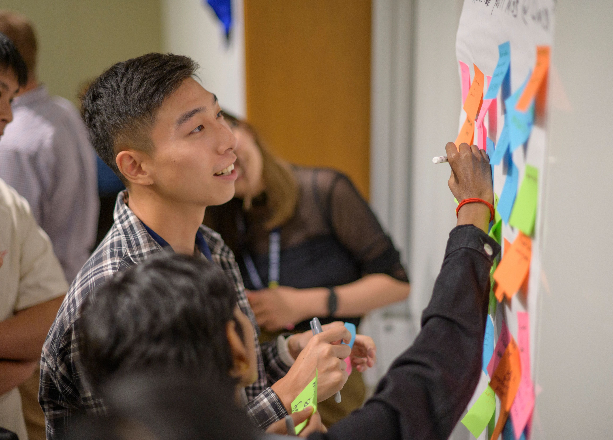
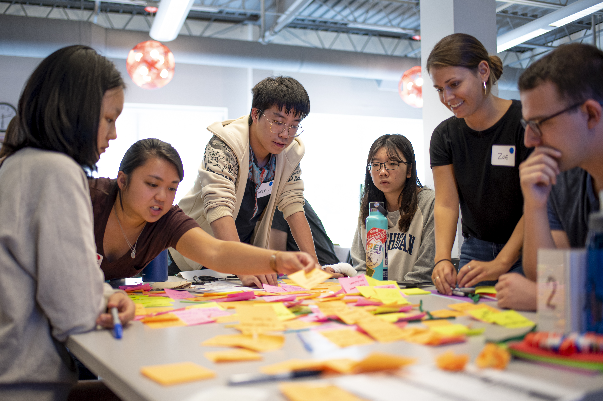

Partner Communication
Draft clear, professional outreach to launch working relationships.

Learning how to navigate early ambiguity is one of the most valuable professional capabilities you will gain at UMSI! Use this guide as a launching pad for your project, learning to build psychological safety within your team and trust with your client.

To get started after your planning, it's important to establish professional communication, conduct initial meetings, and finalize partnership agreements. This phase is where abstract project ideas turn into structured, professional commitments.
Focus on the following goals to establish clear team contracts, co-create agendas, and align on project scope early.
Draft clear, professional outreach to launch working relationships.
Structure productive kickoff meetings that define roles and project bounds.
Document team commitments and scope agreements shared by all stakeholders.
